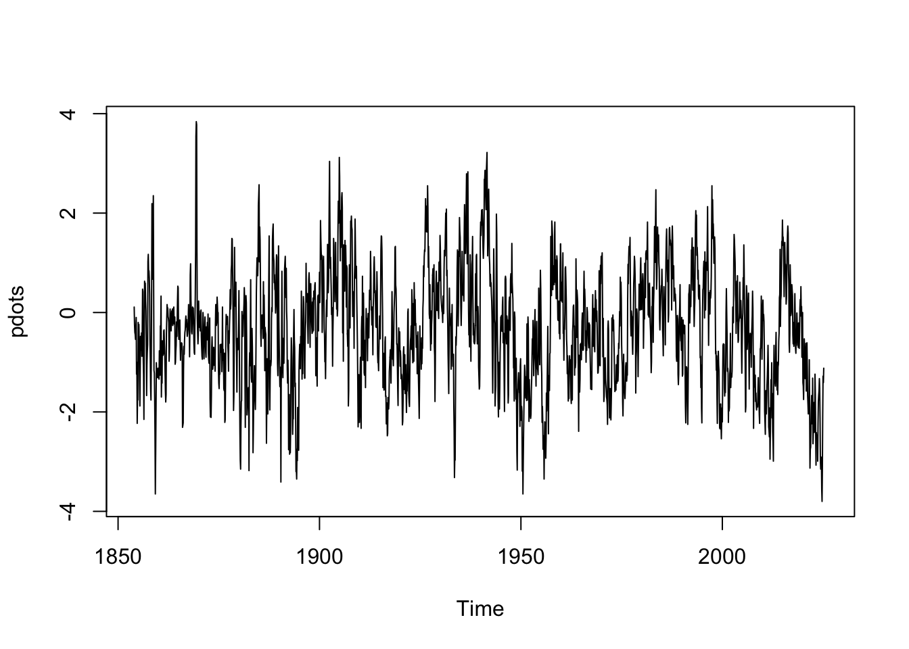

Code
library(tidyverse)
options(dplyr.summarise.inform = FALSE)library(tidyverse)
options(dplyr.summarise.inform = FALSE)See also https://psl.noaa.gov/data/atmoswrit/corr/timeseries/
| Index | Region | Influences | Notes | Data Source |
|---|---|---|---|---|
| PDO (Pacific Decadal Osc.) | North Pacific | Ocean temps, productivity, stratification | Warm phase → poor survival in Alaska, good in CA (and vice versa) | PDO CSV |
| ONI (Oceanic Niño Index) | Equatorial Pacific (global effects) | Upwelling, SST, marine food web | El Niño often harmful for juvenile salmon on West Coast | ONI TXT |
| NPGO (North Pacific Gyre Osc) | North Pacific | Salinity, nutrient flux, productivity | Positively correlated with salmon survival (esp. CA Current) | NPGO TXT |
| Cold Pool Index | Bering Sea shelf | Bottom temperature, habitat compression | Cold pool extent influences migration, prey availability, and predation | coldpool r package |
| NEP SST (NE Pacific SST) | Coastal Alaska, BC, WA, OR, CA | Marine heatwaves, thermal stress | associated with reduced survival | |
| Upwelling Index (Bakun) | California/Oregon coast | Nutrient delivery, primary productivity | Drives ocean growth conditions for smolts | NOAA Upwelling |
| PNA (Pacific-North American) | North America/western U.S. | Winter temps, river flow, snowpack | Influences freshwater survival, stream temperatures info | PNA TXT |
| MEI / MEIv2 (Multivariate ENSO Index) | ENSO-linked | Broad atmospheric/ocean composite | More integrated than ONI; includes wind, pressure, SST | MEIv2 TXT |
| West Coast Stream Flow | Daily West Coast Stream Flow |
This can be painful. Share your code in the class repo so others can use your work! Post here
pdo_url <- "https://www.ncei.noaa.gov/pub/data/cmb/ersst/v5/index/ersst.v5.pdo.dat"
pdo <- read.table(pdo_url, skip = 2, header = FALSE, check.names = FALSE)
pdo[pdo==99.99] <- NA
pdo_vec <- as.numeric(t(pdo[, 2:13]))
pdots <- ts(pdo_vec, freq=12, start=c(1854, 1))
plot(pdots)
MARSS()You need a matrix:
Example for PDO
Let’s say we want to use the April-June average PDO.
# col 1 is year
years <- which(pdo[,1] %in% 2000:2025)
spring_pdo <- rowMeans(pdo[years, 5:7], na.rm = TRUE)
Cmat <- matrix(spring_pdo, nrow=1)
Cmat [,1] [,2] [,3] [,4] [,5] [,6] [,7] [,8]
[1,] -0.6933333 -1.173333 -1.236667 0.05 0.1666667 0.83 -0.2333333 -0.2733333
[,9] [,10] [,11] [,12] [,13] [,14] [,15] [,16] [,17]
[1,] -1.753333 -1.426667 -0.3366667 -0.92 -1.586667 -0.77 0.45 0.68 1.403333
[,18] [,19] [,20] [,21] [,22] [,23] [,24]
[1,] 0.4466667 -0.6433333 0.09333333 -0.8666667 -1.9 -1.883333 -2.673333
[,25] [,26]
[1,] -2.746667 NaNChapter 7 MARSS models. ATSA Lab Book. https://atsa-es.github.io/atsa-labs/chap-mss.html
Chapter 8 MARSS models with covariates. ATSA Lab Book. https://atsa-es.github.io/atsa-labs/chap-msscov.html
Chapter 16 Modeling cyclic sockeye https://atsa-es.github.io/atsa-labs/chap-cyclic-sockeye.html